| Spaltenvektor im |
|
| 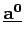 | Einheitsvektor in Richtung |
| 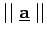 | Norm von |
| 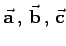 | Vektoren im |
| 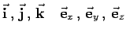 | Basisvektoren (orthonormiert) des kartesischen Koordinatensystems |
| 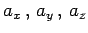 | Koordinaten (Komponenten) des Vektors |
| 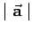 | Betrag, Länge des Vektors |
| 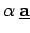 | Multiplikation eines Vektors mit einem Skalar |
| 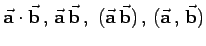 | Skalarprodukt |
| 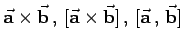 | Vektorprodukt |
| 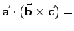 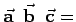 | Spatprodukt (gemischtes Produkt) |
| 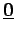, 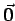 | Nullvektor |
| T | Tensor |
| G=(V,E) | Graph mit der Knotenmenge V und der Kantenmenge E |